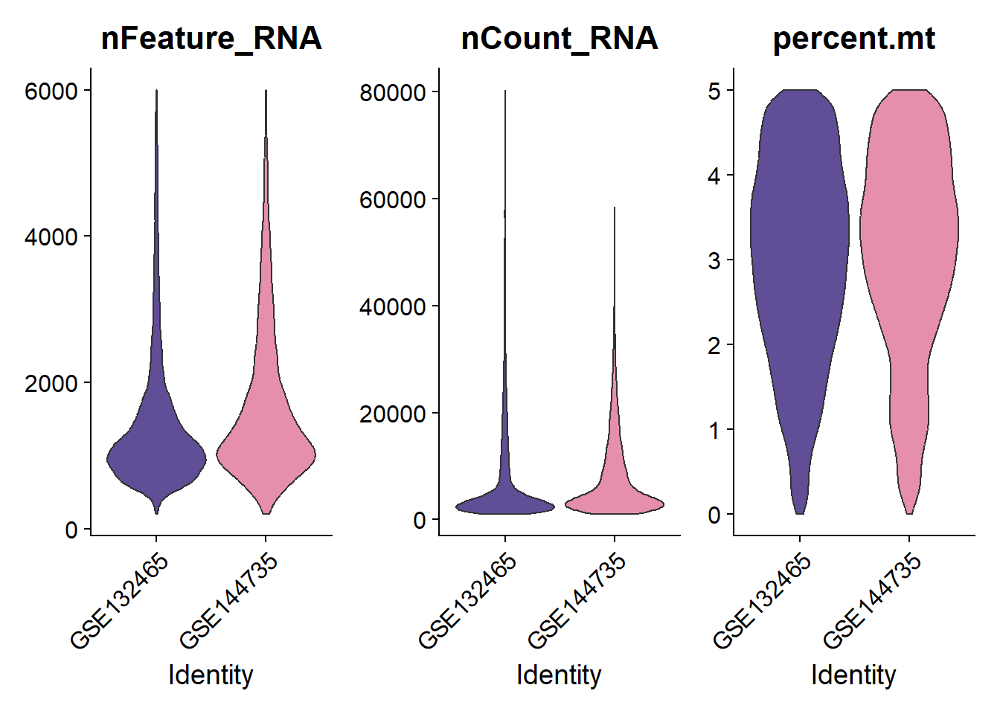
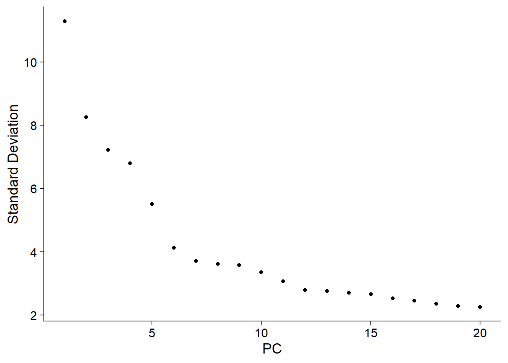
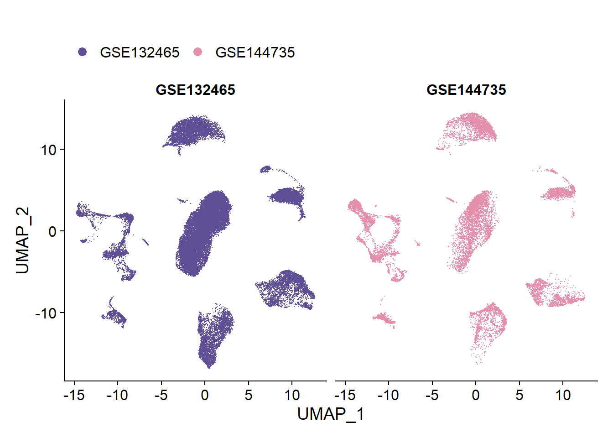
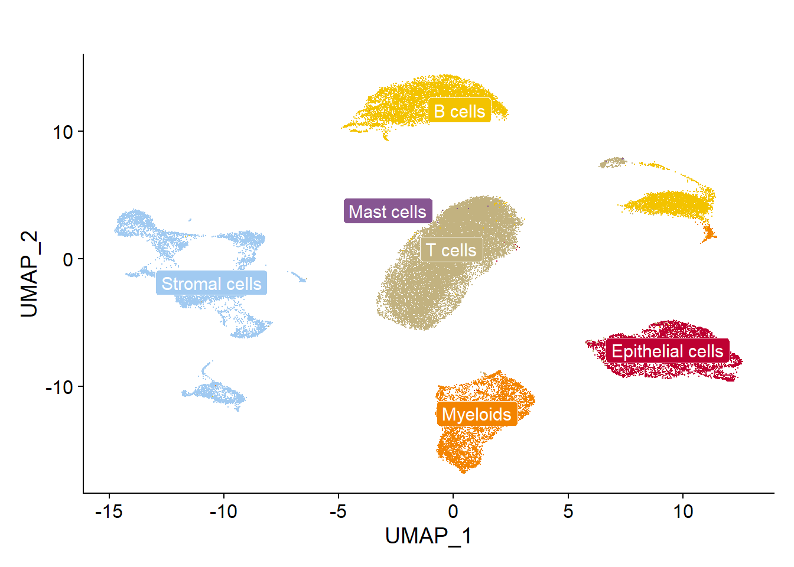
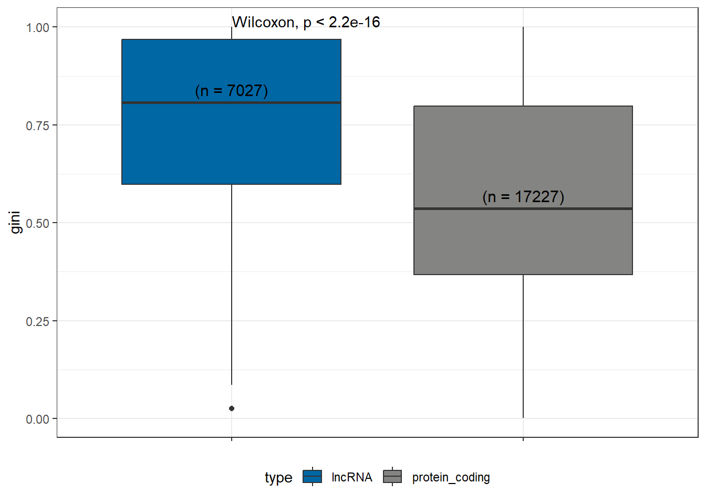
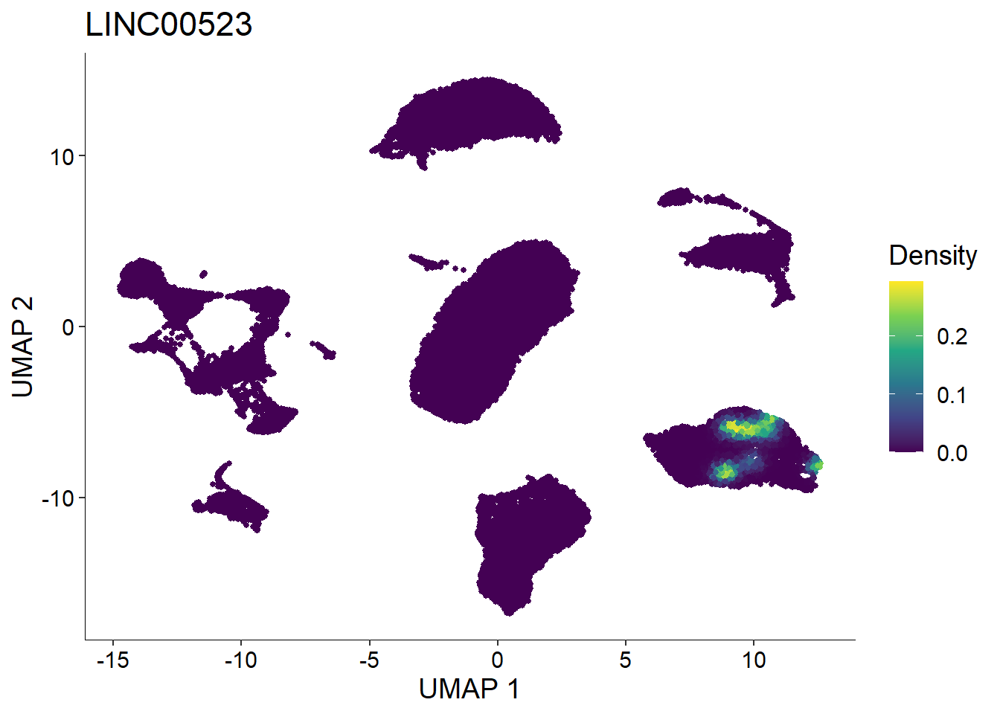
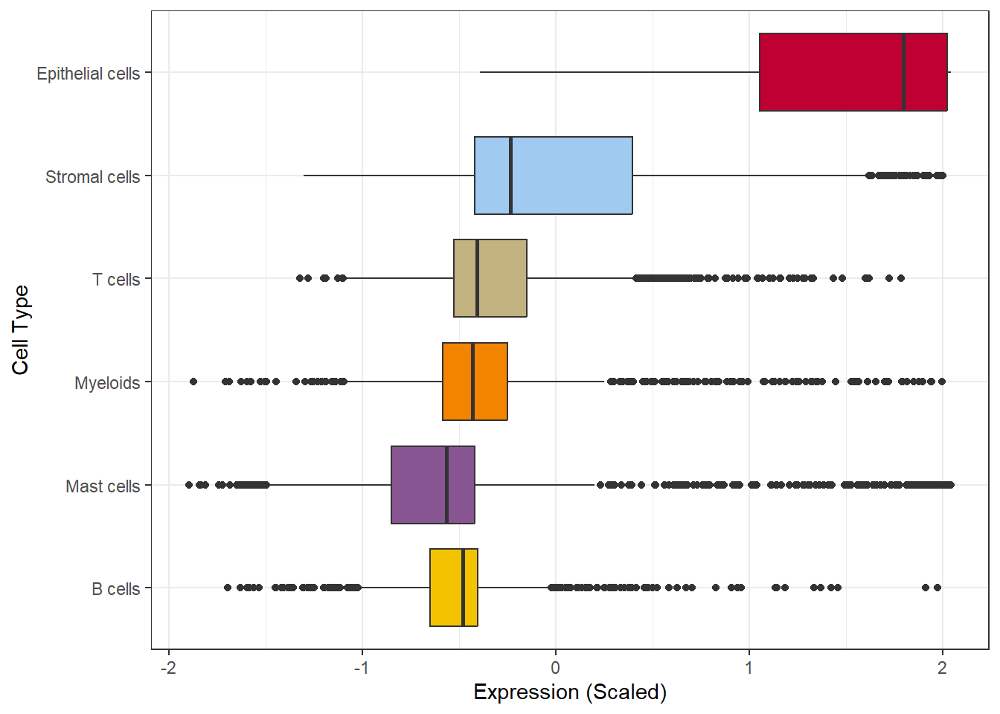
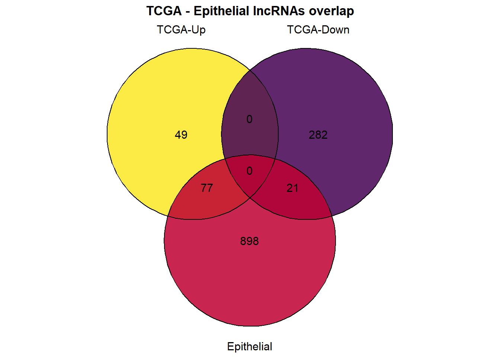
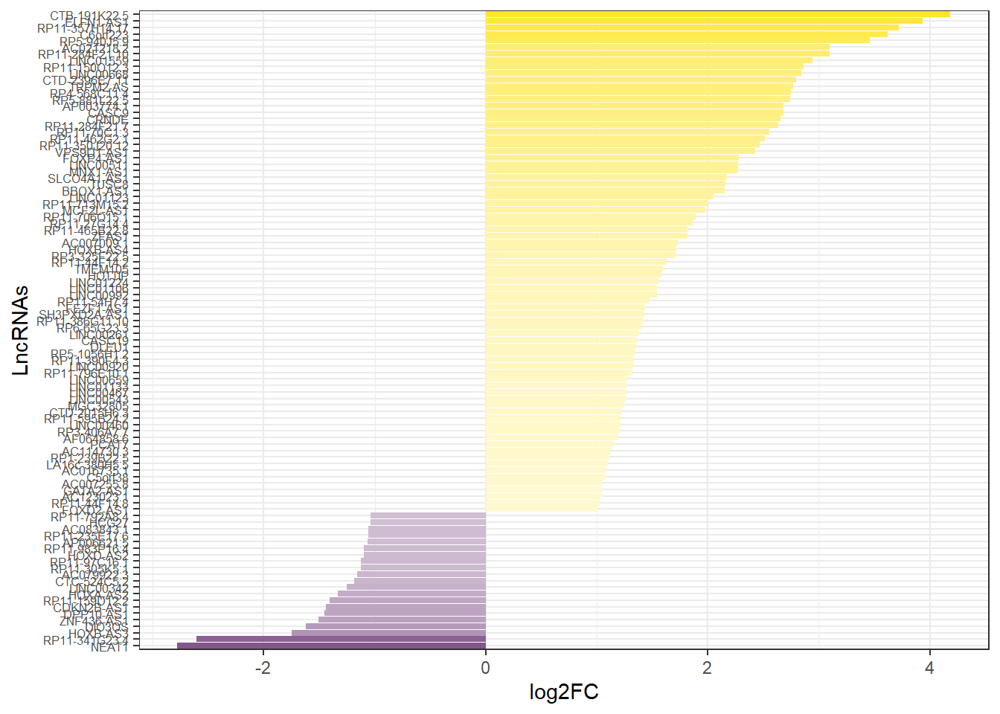
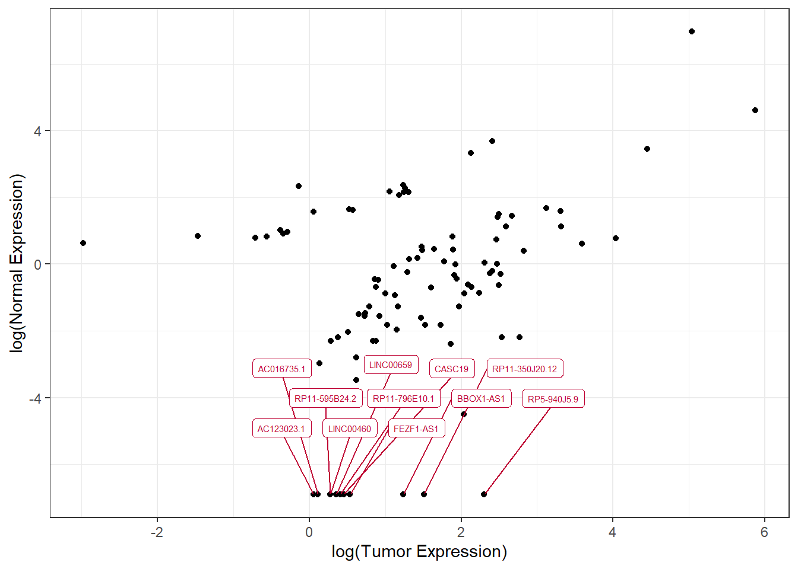

Code
library(scMRMA)
library(Seurat)
library(ggplot2)
library(pals)
library(dplyr)
library(tidyverse)
library(Nebulosa)
library(ggrepel)
library(ggpubr)
library(reshape)
library(ggvenn)
library(DescTools)
memory.limit(80000)[1] 80000This document includes all the code behind the study Mihaljevic et al.
ScRNA-seq data were acquired from Lee, HO., Hong, Y., Etlioglu, H.E. et al. Lineage-dependent gene expression programs influence the immune landscape of colorectal cancer. Nat Genet 52, 594–603 (2020). https://doi.org/10.1038/s41588-020-0636-z and the respective GEO dataset GSE144735 and GSE132465.
Bulk RNA-seq data were acquired from TCGA, by using GEPIA2 (http://gepia2.cancer-pku.cn/#index).
We load the necessary libraries.
library(scMRMA)
library(Seurat)
library(ggplot2)
library(pals)
library(dplyr)
library(tidyverse)
library(Nebulosa)
library(ggrepel)
library(ggpubr)
library(reshape)
library(ggvenn)
library(DescTools)
memory.limit(80000)[1] 80000We read the count matrices and create a Seurat Object with the two datasets. We filter out the cells which have mitochondrial content >5%. We keep all the cells which express at least one features and all the features which are expressed in at least one cell. We generate plots
counts1 <- read.table("DATA/GSE144735_processed_KUL3_CRC_10X_raw_UMI_count_matrix.txt", header = T, sep="\t", row.names = 1)
meta1 <- read.table("DATA/GSE144735_processed_KUL3_CRC_10X_annotation.txt", header = T, sep="\t", row.names = 1)
rownames(meta1) <- gsub("-",".", rownames(meta1))
obj1 <- CreateSeuratObject(counts = counts1, min.cells = 1, min.features = 1)
meta1 = meta1[colnames(obj1),]
obj1$type <- meta1$Class
obj1$Cell_type <- meta1$Cell_type
obj1[["percent.mt"]] <- PercentageFeatureSet(obj1, pattern = "^MT-")
obj1 <- subset(obj1, subset = percent.mt < 5)
rm(counts1)
rm(meta1)
counts2 <- read.table("DATA/GSE132465_GEO_processed_CRC_10X_raw_UMI_count_matrix.txt", header = T, sep="\t", row.names = 1)
meta2 <- read.table("DATA/GSE132465_GEO_processed_CRC_10X_cell_annotation.txt", header = T, sep="\t", row.names = 1)
rownames(meta2) <- gsub("-",".", rownames(meta2))
obj2 <- CreateSeuratObject(counts = counts2,min.cells = 1, min.features = 1)
meta2 = meta2[colnames(obj2),]
obj2$type <- meta2$Class
obj2$Cell_type <- meta2$Cell_type
obj2[["percent.mt"]] <- PercentageFeatureSet(obj2, pattern = "^MT-")
obj2 <- subset(obj2, subset = percent.mt < 5)
rm(counts2)
rm(meta2)
gc()
obj1$GSE <- "GSE144735"
obj2$GSE <- "GSE132465"
obj <- merge(obj1, y = obj2)
saveRDS(obj, "OUT/merged.Rds")
rm(obj1)
rm(obj2)obj <- readRDS("OUT/merged.Rds")
VlnPlot(obj, features = c("nFeature_RNA", "nCount_RNA", "percent.mt"), ncol = 3, group.by = "GSE", cols=kelly()[c(14,11)], pt.size = 0)
#ggsave("OUT/Suppl. 1A. QC.pdf", width = 20, height = 9.9, units = "cm")
objAn object of class Seurat
28751 features across 49436 samples within 1 assay
Active assay: RNA (28751 features, 0 variable features)We normalize and scale the data, identify the most variable features and perform dimensionality reduction.
obj <- NormalizeData(obj)
obj <- FindVariableFeatures(obj, selection.method = "vst", nfeatures = 2000)
all.genes <- rownames(obj)
obj <- ScaleData(obj, features = all.genes)
obj <- RunPCA(obj, features = VariableFeatures(object = obj), npcs = 50)
ElbowPlot(obj)
obj <- RunUMAP(obj, dims = 1:15)DimPlot(obj, group.by="GSE", cols=kelly()[c(14,11)], split.by = "GSE") + ggtitle("") + theme(legend.position = "top")
#ggsave("OUT/Suppl. 1B. UMAP batch.pdf", width = 20, height = 9.9, units = "cm")The original dataset provides the cell type annotations. We aimed to interdependently validate this labeling by re-performing unsupervised cell type annotation (scMRMA + PanglaoDB).
DimPlot(obj, group.by="Cell_type", cols=kelly()[c(3,7, 4,5,6,8)], label = T, label.box = T, label.color = "white") + ggtitle("") + theme(legend.position = "none")
#ggsave("OUT/1A. UMAP.cell type.pdf", width = 10, height = 9, units = "cm")result <- scMRMA(input=obj, species="Hs")
obj[["cell_type1"]] <- result$multiR$annotationResult[colnames(obj),1]
df <- melt(table(obj$Cell_type, obj$cell_type1))
colnames(df) <- c("Original","Validation","Fraction")
ggplot(df, aes(x=Original, y=Fraction, fill=Validation)) + geom_bar(stat="identity", position = "fill") +
scale_fill_manual(values = kelly()[c(6,7, 3,5,8)]) + theme_bw() + coord_flip()
#ggsave("OUT/Suppl. 1C. cell type validation.pdf", width = 20, height = 9.9, units = "cm")We used gencode annotation to identify the lncRNAs and protein coding genes which are measured in the scRNA-seq data. We then compared the cell type specificity between protein coding and lncRNA genes estimating the Gini Coefficient.
gencode <- read.table("DATA/human_gencode.txt", header = T)
lnc <- filter(gencode, type == "lncRNA")
lnc <- lnc[which(lnc$SYMBOL %in% rownames(obj)),]
prot <- filter(gencode, type == "protein_coding")
prot <- prot[which(prot$SYMBOL %in% rownames(obj)),]
Idents(obj) <- "Cell_type"
lnc_percent <- DotPlot(obj, features = unique(lnc$SYMBOL))
lnc_percent <- lnc_percent$data
GiniCoef_lnc <- lnc_percent %>% group_by(features.plot) %>% summarise(gini = Gini(pct.exp))
GiniCoef_lnc$type <- "lncRNA"
prot_percent <- DotPlot(obj, features = unique(prot$SYMBOL))
prot_percent <- prot_percent$data
GiniCoef_prot <- prot_percent %>% group_by(features.plot) %>% summarise(gini = Gini(pct.exp))
GiniCoef_prot$type <- "protein_coding"
GiniCoef <-rbind(GiniCoef_lnc, GiniCoef_prot)
saveRDS(object = GiniCoef, "OUT/gini.Rds")GiniCoef <- readRDS("OUT/gini.Rds")
temp <- GiniCoef %>% filter(type=="lncRNA")
lnc_n <- length(which(!is.na(temp$gini)))
temp <- GiniCoef %>% filter(type=="protein_coding")
prot_n <- length(which(!is.na(temp$gini)))
ggplot(GiniCoef, aes(x=type, y=gini, fill=type)) + geom_boxplot() + stat_compare_means(hjust=0) + theme_bw() +
scale_fill_manual(values = kelly()[c(12,9)]) +
theme(axis.title.x = element_blank()) + theme(axis.text.x = element_blank()) + theme(legend.position = "bottom") +
annotate(x = c("lncRNA","protein_coding"), y=c(0.84, 0.57), label=c(paste0("(n = ",lnc_n,")"),
paste0("(n = ",prot_n,")")), col='black', size=4, geom="text")Warning: Removed 1085 rows containing non-finite values (`stat_boxplot()`).Warning: Removed 1085 rows containing non-finite values
(`stat_compare_means()`).
#ggsave("OUT/1B. cell type.specificity.pdf", width = 10, height = 9, units = "cm")We performed differential expression to identify the lncRNAs which are significantly (adjusted pvalue < 0.01) enriched in the epithelial cells.
Idents(obj) <- "Cell_type"
gencode <- read.table("DATA/human_gencode.txt", header = T)
lnc <- filter(gencode, type == "lncRNA")
lnc <- lnc[which(lnc$SYMBOL %in% rownames(obj)),]
lnc_percent <- DotPlot(obj, features = unique(lnc$SYMBOL))
lnc_percent <- lnc_percent$data
M <- FindMarkers(obj, ident.1 = "Epithelial cells", only.pos = T, min.pct = 0, logfc.threshold = 0, features = unique(lnc$SYMBOL))
M <- subset(M, p_val_adj < 0.01)
lnc_percent2 <- subset(lnc_percent, features.plot %in% rownames(M))
lnc_percent2$id <- factor(lnc_percent2$id, levels = c("B cells", "Epithelial cells", "Mast cells", "Myeloids", "Stromal cells", "T cells"))plot_density(obj, "LINC00523")
#ggsave("OUT/1C. Epithelial.lncRNAs.example.pdf", width = 10, height = 9, units = "cm")ggplot(lnc_percent2, aes(x=reorder(id, avg.exp.scaled), y=avg.exp.scaled, fill=id)) + geom_boxplot() + coord_flip() +
scale_fill_manual(values = kelly()[c(3,7, 4,5,6,8)]) + theme_bw() + theme(legend.position = "none") + ylab("Expression (Scaled)") + xlab("Cell Type")
#ggsave("OUT/1D. Epithelial.lncRNAs.expression.pdf", width = 10, height = 9, units = "cm")We accessed the COAD TCGA data via the GEPIA2 webserver and performed differential expression analysis between tumor and normal samples. Integrating these results with the epithelial lncRNAs we identified 77 upregulated epithelial lncRNAs, 11 of which show minimal expression in normal samples.
COAD <- read.table("DATA/coad.tcga.txt", header = T)
lnc <- filter(gencode, type == "lncRNA")
COAD <- filter(COAD, Gene %in% lnc$SYMBOL)
x = list(COAD$Gene[which(COAD$log2FC >0)], COAD$Gene[which(COAD$log2FC < 0)], rownames(M))
names(x) <- c("TCGA-Up","TCGA-Down", "Epithelial")
ggvenn(
x,
fill_color = c(viridis(11)[c(11,1)], kelly()[c(7)]),show_percentage = F,
stroke_size = 0.5, set_name_size = 4, fill_alpha=0.85,
) + ggtitle("TCGA - Epithelial lncRNAs overlap") + theme(plot.title = element_text(hjust = 0.5, face="bold"))
#ggsave("OUT/2A. Epithelial.lncRNAs.TCGA.venn.pdf", width = 10, height = 9, units = "cm")COAD <- filter(COAD, Gene %in% rownames(M))
ggplot(COAD, aes(x=reorder(Gene, log2FC), y=log2FC, fill=log2FC)) + geom_bar(stat="identity") + coord_flip() +
scale_fill_gradient2(midpoint = 0, low = viridis(3)[1], high = viridis(3)[3]) + theme_bw() + xlab("LncRNAs") + theme(legend.position = "none") +
theme(axis.text.y = element_text(size=6))
#ggsave("OUT/2B. Epithelial.lncRNAs.TCGA.DEGs.pdf", width = 10, height = 20, units = "cm")ggplot(COAD, aes(x=log(Tumor+0.001), y=log(Normal+0.001))) + geom_point() + theme_bw() +
ylab("log(Normal Expression)") + xlab("log(Tumor Expression)") +
geom_label_repel(
nudge_y = 3,
nudge_x = 0.5, color = kelly()[7], fill="white",
max.overlaps = 100000, size=2,
label=ifelse(COAD$Normal == 0, COAD$Gene, "")) 
#ggsave("OUT/2C. Epithelial.lncRNAs.TCGA.ZeroNormal.pdf", width = 10, height = 9, units = "cm")